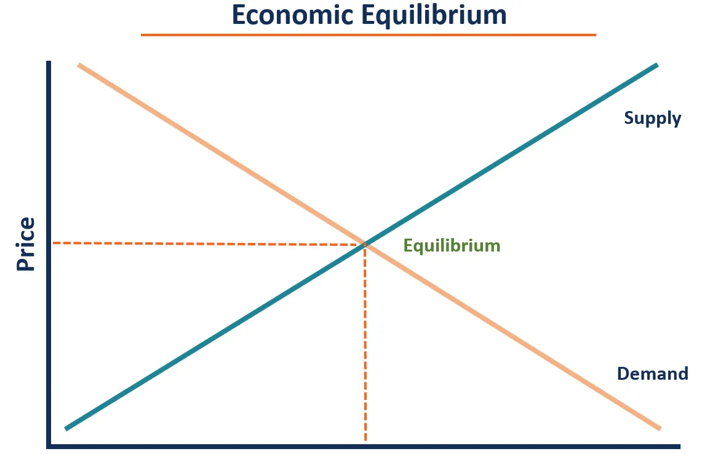
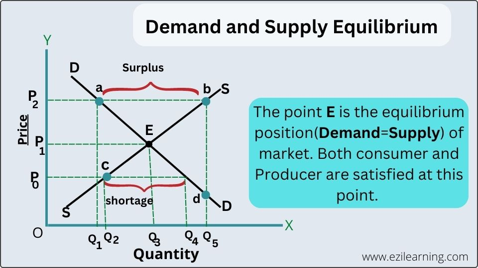

-Isang kalagayan na walang simulan sa mamimili at nagbibili ang gustong baguhin ang kasaluyang sitwasyon sa pamilihan (mathematically, Qs=Qd)
Law of Supply at Demand: Kung pataas ang Presyo, bumaba ang demand pero tumaas ang supply (ito ay surplus), at vice versa (yan ay shortage)

Mga kaganapan sa pagbabago sa pamilihan